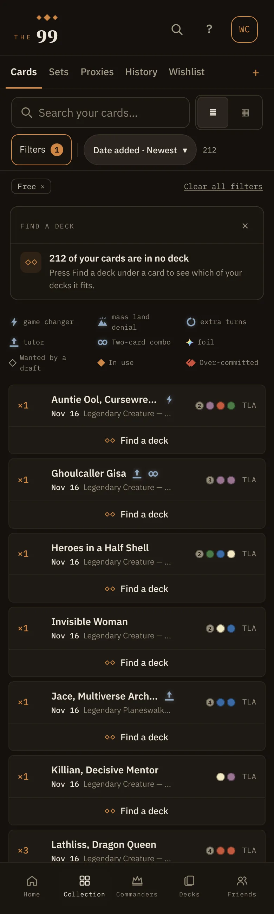

Finding the tools · R4
One complaint: "I have a bunch of cards I want to add to my other decks, but I don't know where to go." R4 redraws Find a deck's rows over the full shipped row, puts a search field on Home for good, and sets down how card search and Ask share one field. Rendered from main 7563036 with shipped components. Figures and art are illustrative.
- Rows are drawn over the full shipped row (marks, combo, foil, pips, dates); the phone's button becomes a strip under the row (call 1, Q8).
- Home's field stays for good and moves up, first under the page head (R3 Q7 withdrawn: it asked whether the Home field should go away after three uses; it no longer does).
- No model call for Ask (R3 Q6, settled).
- Tuning and Welcome as R1, the tile button as R2, approved.
5 · Ask and card search, one field (R4)
- Home gets the field for good, first under the page head and above the welcome strip: Search cards, or ask a question, a press that opens the search, and the four starters under it (one row that scrolls sideways on a phone). The magnifier and ⌘K stay on every screen.
- The search itself is as R3: starters when nothing is typed, Tools for this above the cards for a question, never a dead end. No model call (Hugh, R3 Q6).
- One field, two jobs, and what keeps them apart:
- Card names that read as questions (Where Ancients Tread, Ask Urza, Find the Path, What Must Be Done). A card whose name starts with the query, or equals it, always ranks first; tools follow under it. Tools lead only when no card name starts with the query.
- One word. Tools answer one word only when it is a tool's own name (Wishlist, Tuning, Consider); otherwise a question needs two or more words to hit a phrase. Typing a name stays a card lookup.
- All cards vs yours. Card results are every card, as shipped; tool answers are about the reader's own cards and decks, and say so with their numbers.
- Keys and screen readers. One combobox, one listbox with two labelled groups (Tools for this, the cards); ↑ ↓ move through both, ↵ opens.
- Expectation. A question with no match says so plainly and offers the starters and About; it never shows a card no-results box for a question.
- Measuring. The search event records which group the press came from (tool or card), never the text, so card lookups and questions read apart.
- Why one field: new players will not know which of two boxes to use, and the app's rule is one control per action.
1 · Find a deck in row view, over the full row (R4)
- Drawn over the row as it ships, sorted by Date added as most collections are: copies, name, bracket marks, combo, foil, the date, the type line, cost pips, the set. In the Free view every row is free, so the shipped row draws no availability marker.
- Phone: a Find a deck strip under each row, inside its outline (40px, the glyph and the word, a hairline above). The row keeps every cell and its whole name line, and it reads as the tile's button does. The call-out reads as the tiles': Press Find a deck under a card…
- Desktop: the R3 button beside the row (136px, glyph and word), the row's height. A desktop row has the room.
- R3's phone glyph beside the row is drawn as Q8's option B: it costs the name about ten characters on a full row.
2, 3 · As R1, approved
- Tuning gets its own tab after Analysis; Consider leaves the tab row and becomes Tuning's first tile. Analysis keeps the reading.
- Where credits work: every row lands, the Tuning rows name the tab, and a free block names Consider and Find a deck.

Home, the search for good
First under the page head.

Collection rows, Free
A Find a deck strip under each row.
Q8 · Phone rows: a Find a deck strip under each row, or the glyph beside it?
Recommended: A. The name is what a reader scans by, and the word matches the tile's button, so phone and desktop read the same.
- Card search's card results, recents, Add several and its keys.
- The card window's Find a deck door and its moment (M8).
- The Availability filter, its options and its chip.
- Home's strip, the first-run tour.